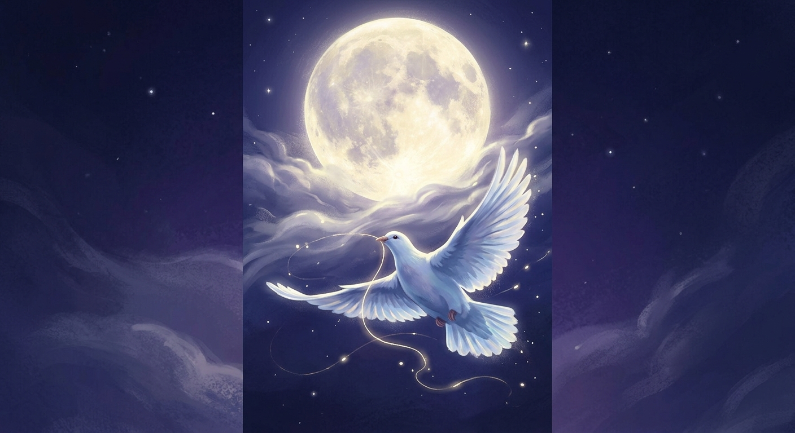

The Dove Carried a Piece of Me
The Dove Carried a Piece of Me is a meditation on an eternal bond that seems to exist beyond distance, time, and even the boundaries of this world.
The dove becomes a messenger between two souls, carrying a small piece of one heart toward the other. The moon watches from afar, witnessing a love that remains unspoken, hidden beneath years of silence and separation.
This poem speaks of a final homecoming, not necessarily in this lifetime, and not necessarily in the way the heart once dreamed. It explores the belief that some connections cannot truly be broken, even when life, fear, and worldly circumstances keep two souls apart.
At its heart, this is a poem about love that survives silence, separation, and time, a love that continues to burn quietly, waiting for the moment when all secrets disappear and two souls can finally recognize their eternal bond
.
🎵 "Memories Romantic Sad Piano Melody" - echoes_of_lumen (Pixabay Music)
